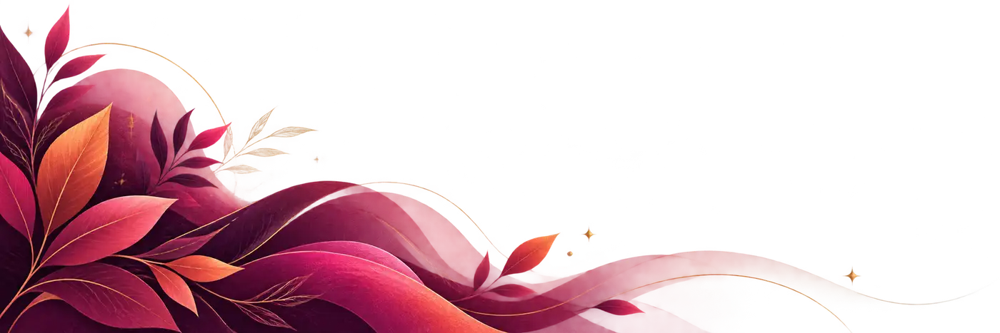
Bem-vinda ao meu mundo
Mathy Lemoss
Entre quem eu fui
e quem ainda estou me tornando,
existe uma vida inteira
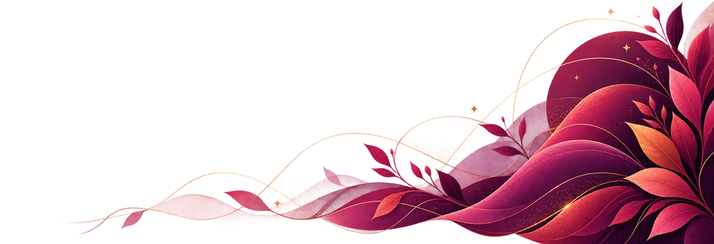
Manifesto
Em busca de ser, antes de qualquer coisa, humana
Eu já procurei sucesso, números, lugares e respostas. Hoje procuro sentido. Procuro o meu lugar sem precisar ser maior nem menor que ninguém. Um lugar onde eu possa existir inteira.
Talvez esse espaço seja sobre mim. Mas quero que, em algum momento, ele também faça você pensar sobre você.
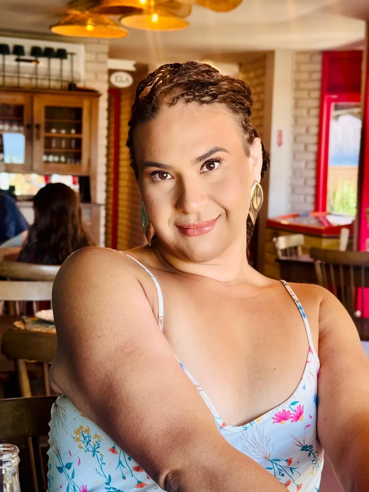
Prazer, Mathy
Uma mulher trans que fez da própria história uma forma de conexão
Mathy Lemoss é uma mulher trans maranhense, natural de Dom Pedro, no interior do Maranhão. Influenciadora digital, atriz e humorista, constrói sua trajetória na internet há mais de uma década.
Começou quando a câmera ainda significava experimentar. Veio o YouTube, veio o Instagram e, na pandemia, veio o TikTok. As dublagens, as interpretações, as caras e bocas e o humor espontâneo levaram Mathy a uma audiência nacional.
Mas número nenhum conta uma pessoa inteira. Por trás da criadora existe uma mulher apaixonada por beleza, maquiagem, espiritualidade, histórias, transformação e pelas pequenas coisas que fazem a vida parecer mais viva.
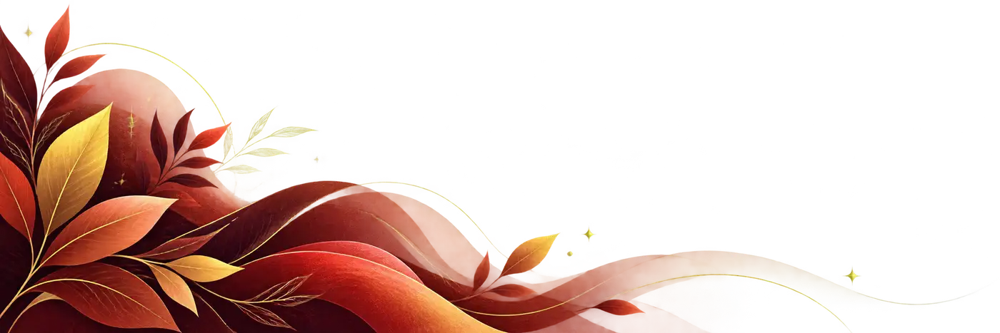
Trajetória
Do Maranhão para o Brasil
Conteúdos
Eu não sou
um nicho
Sou todas as coisas que vivi até aqui
Sem personagem
A vida que acontece quando ninguém diz “gravando”
Academia. Caminhada. Um café. Uma maquiagem feita sem pressa. Uma conversa. Um dia bom. Um dia nem tanto. Existe muita Mathy entre uma publicação e outra.
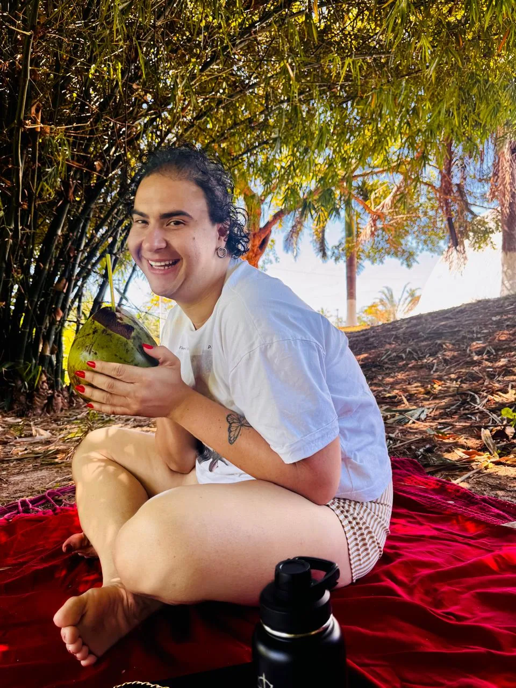
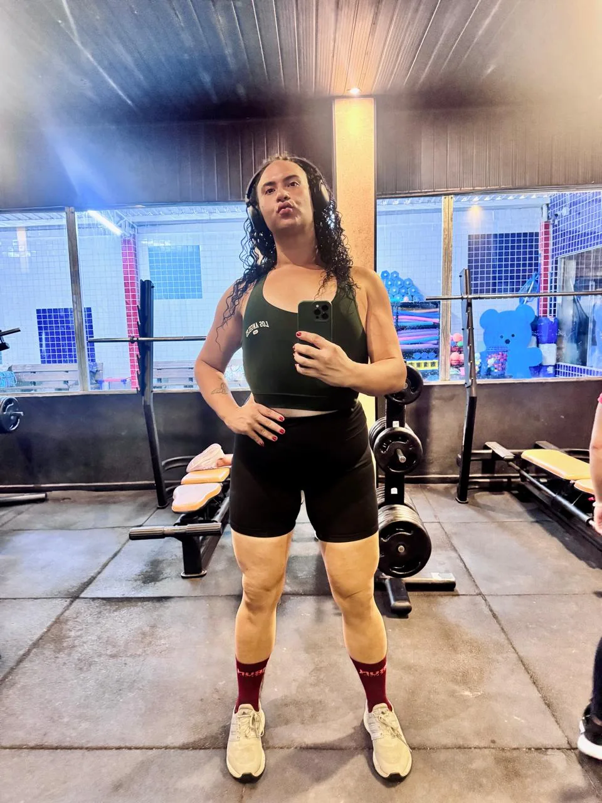
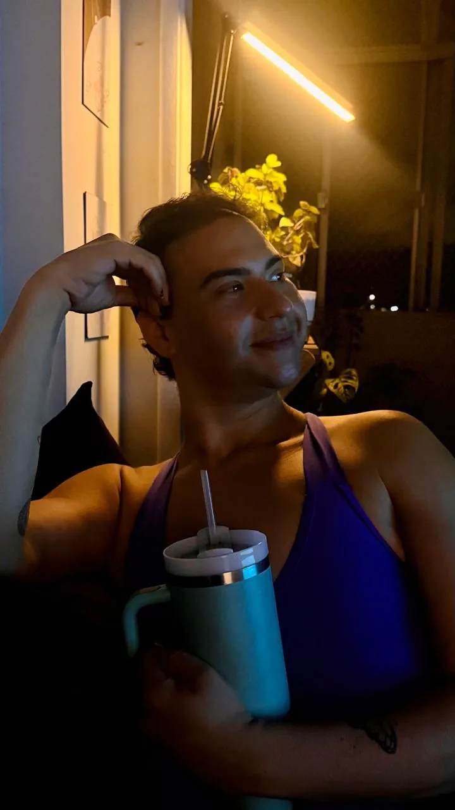
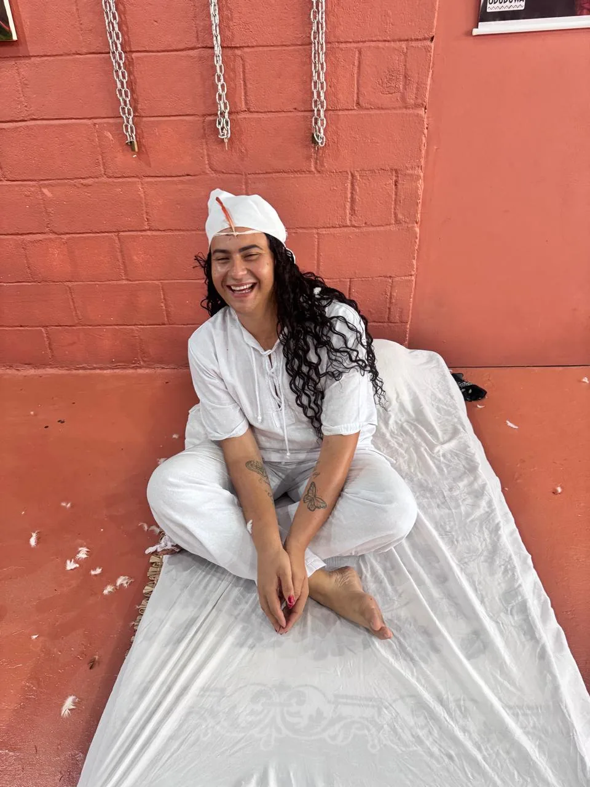
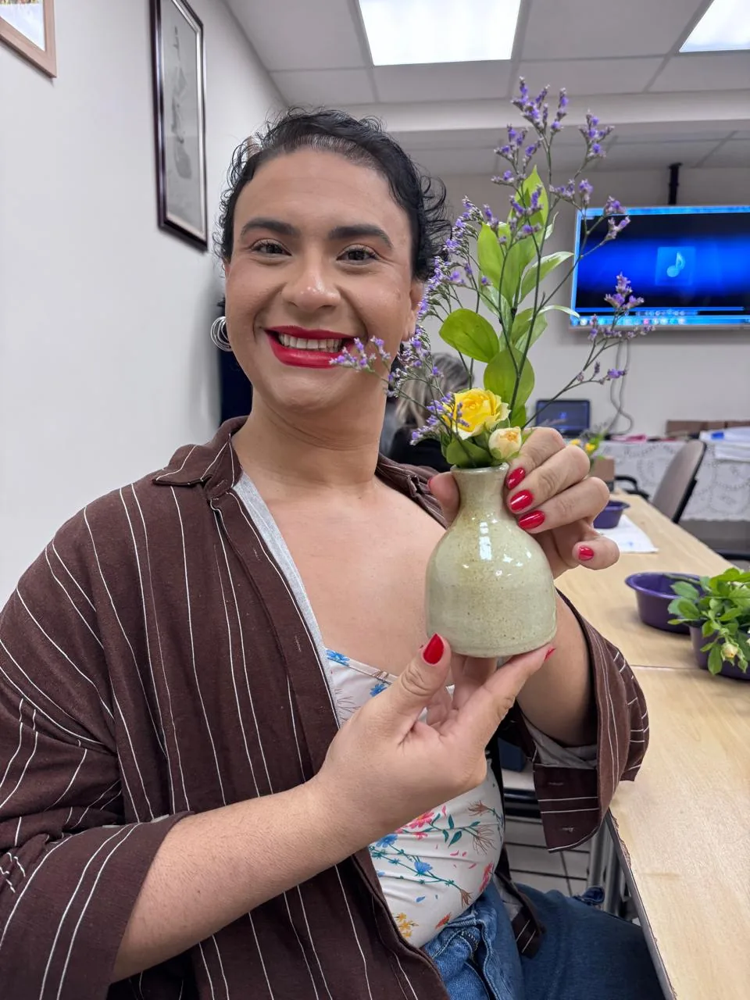
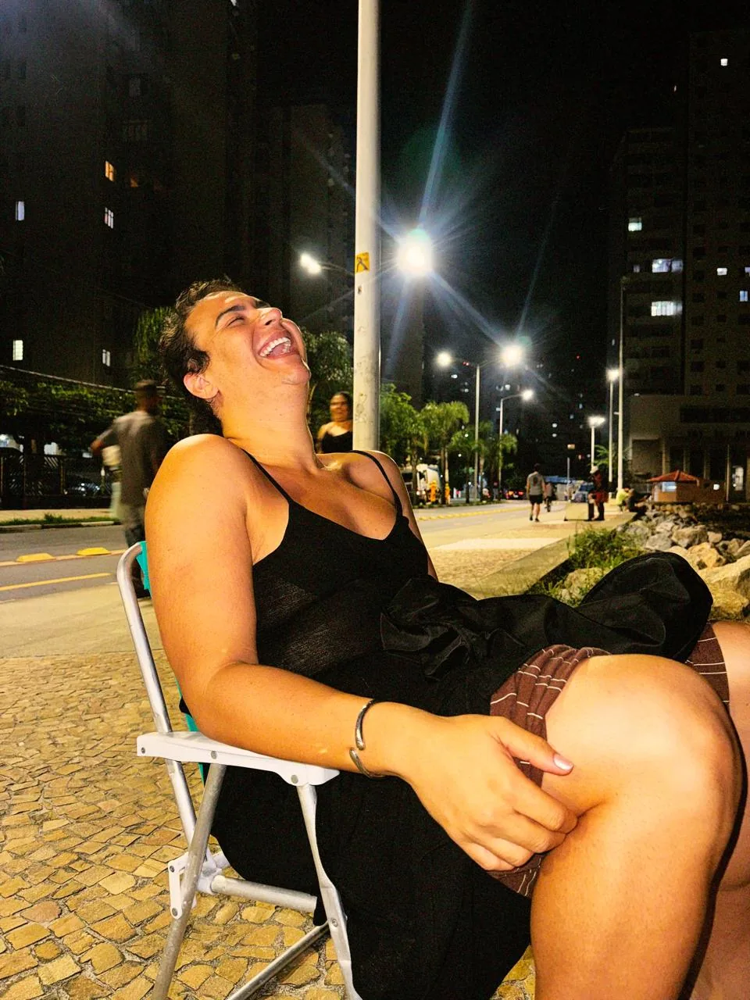
Transformação
O corpo mudou
Mas não foi só o corpo
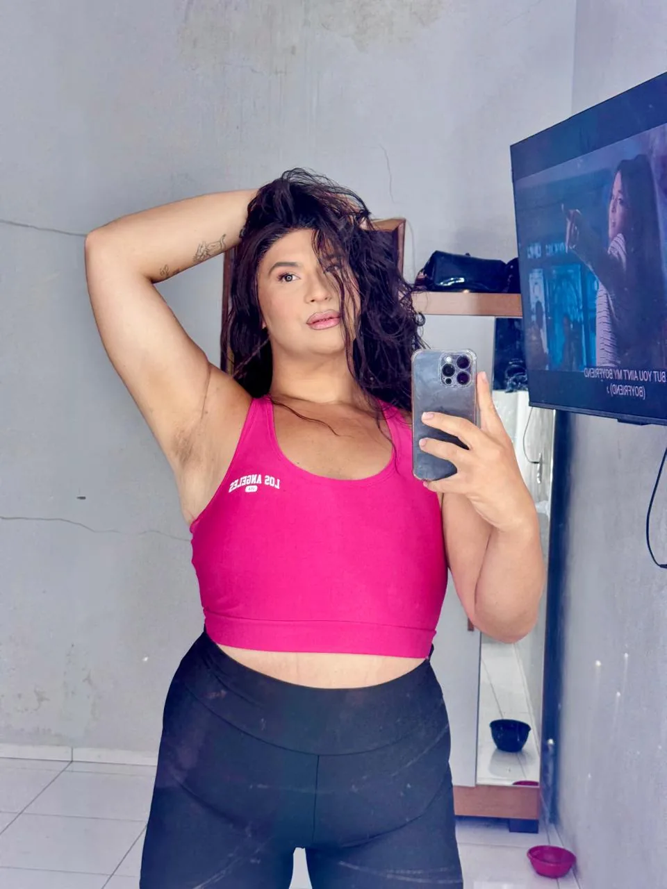
O processo de emagrecimento marcou uma das maiores transformações da vida da Mathy. Existe uma Mathy antes e uma depois dessa experiência, mas a diferença não cabe numa balança.
No caminho vieram confiança, coragem, novos limites e uma maneira diferente de enxergar a própria capacidade de mudar.
Quando eu comecei a acreditar que podia mudar uma coisa, comecei a perceber quantas outras também poderiam mudar.
Audiovisual
Também atriz
Da tela do celular para outras telas
Mathy + marcas
Publicidade não precisa
parecer publicidade
Quando a Mathy fala de uma marca, ela não abandona a própria linguagem para vestir um personagem. A marca entra no mundo dela.
É conversa, humor, experiência, opinião, estética e verdade. Porque uma audiência até esquece um anúncio. Mas dificilmente esquece algo que a fez sentir alguma coisa.
Minha força não está em parecer perfeita para uma marca. Está em continuar parecendo comigo.
Formatos disponíveis para parceria
Campanhas
Conceito, roteiro e execução na linguagem que já funciona no perfil dela.
Conteúdo patrocinado
Vídeo para TikTok e Reels, Stories e conteúdo estático.
UGC
Conteúdo para os canais da marca, com entregas e direitos de uso definidos na proposta.
Eventos
Presença, cobertura em tempo real e conteúdo depois que acaba.
Beleza e moda
Lançamentos, prova de produto e ações de imagem.
Projetos especiais
Formatos autorais, séries de conteúdo e embaixadas de marca.
Como funciona, sem mistério
Como começa uma parceria
Chega uma mensagem com o briefing: marca, objetivo, formato e prazo. A partir daí a Mathy responde com o que faz sentido para o perfil dela e a proposta adequada ao projeto.
Quais formatos ela entrega
Vídeo para TikTok e Reels, Stories, conteúdo estático, UGC para a marca usar nos próprios canais e presença em evento. Combinações também são possíveis.
Ela aceita roteiro fechado
Aceita direção e mensagens obrigatórias. Mas o texto passa pela voz dela. A proposta é preservar a espontaneidade e a relação com quem acompanha seu trabalho.
Em quais canais ela publica
Instagram e TikTok, no @mathylemoss. No UGC, os canais, o período de uso e a veiculação em mídia paga são combinados na proposta.
Como recebo o mídia kit
Solicite pelo WhatsApp os dados de audiência e os materiais disponíveis para avaliar sua parceria. Envie marca, objetivo, formatos desejados e prazo.
Parcerias
Algumas histórias que já passaram por aqui
Campanhas e projetos
Agora, um outro lado da Mathy
Espiritualidade
Às vezes a resposta não está nas cartas. Está no que elas fazem você enxergar
A Mathy encontrou no tarô terapêutico uma extensão da maneira como se conecta com as pessoas. O atendimento é um espaço de conversa, escuta e reflexão para quem sente que precisa olhar uma situação por outro ângulo.
- Tarô terapêutico
- Atendimento individual
- Online
- Com acolhimento e sem julgamento
O que quem já sentou à mesa diz
A Mathy que uma marca contrata
- Humana
- Intensa
- Divertida
- Imprevisível
- Profissional
E impossível de colocar dentro de uma única caixa
Quero trabalhar com a Mathy
Talvez você tenha chegado aqui
para conhecer a Mathy
Espero que saia daqui lembrando um pouco de você também
Publicidade e campanhas
Campanhas, conteúdo patrocinado, UGC e embaixadas de marca.
Enviar briefing 02Eventos e participações
Presença, cobertura e participação em projetos.
Fazer convite 03Tarô terapêutico
Atendimento individual e online, com hora marcada.
Agendar leituraTodo dia por lá
@mathylemoss